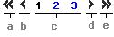

| Tipo de Assunto | identificados numa lista |
| Palavra-chave | será comparada com o conteúdo do título e da descrição dos scripts disponíveis |
| Código | Sequencial de identificação do script |
| Descrição | Identificação (título) do Script |
| Situação | Aprovado (quando o script tiver sido aprovado pelo ouvidor), reprovado (script reprovado pelo ouvidor), pendente (script aguardando avaliação do ouvidor) ou inativo (quando o script tiver sido desativado no sistema, podendo ser utilizado apenas para fins estatísticos ou como informação para o Gestor de Conteúdo) |
|  | |
| a) Primeira página | Lista os registros da página inicial |
| b) Página anterior | Lista os registros da página anterior |
| c) Ir para a página | Lista os registros da página diretamente selecionada |
| d) Próxima página | Lista os registros da próxima página |
| e) Última página | Lista os registros da última página |
| Inclusão | Criação de novo script |
| Alteração | Alteração dos dados do script já existente |
| Tipo de Assunto | Lista com os tipos de assunto ao qual o script pode pertencer |
| Indetificação | Título do script |
| Texto | Descrição do script |
| Alterar | Altera os dados do script após pedido de confirmação |
| Excluir | Exclui os dados do script após pedido de confirmação |
| Salvar | Salva os dados do novo script após pedido de confirmação |